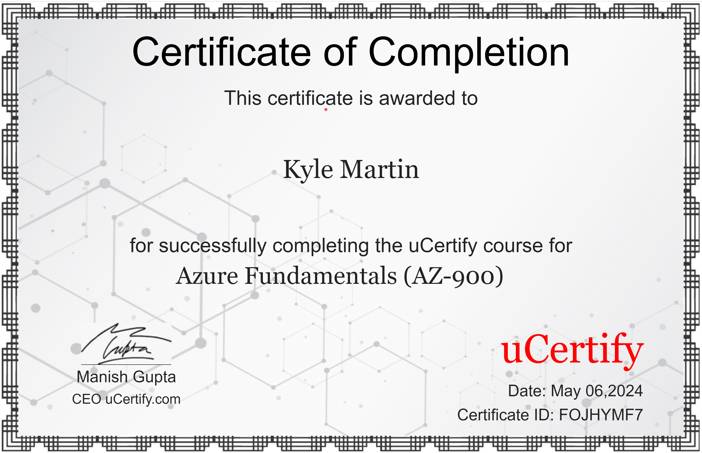
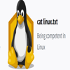
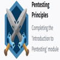

Professional Summary
Resourceful and analytical Security Analyst with extensive experience in Oracle database, Server Management, SQL querying, Python Scripting, and cybersecurity protocols. Proven expertise in distribution control systems (DCS) by resolving complex issues to ensure operational efficiency and data integrity. Adept at risk assessment, vulnerability testing, promoting best security practices.
Experience
Distribution Control System Technician - KellyOCG, Jacksonville, FL
August 2023 - Present
- Created the Prototype Framework of SQL querying chat-bot to enhance customer support with AI that reads from our Database, IRIS Incident Tickets/Solutions, and Confluence Knowledge Pages through API integration with Azure cloud services.
- Python Scripting to streamline the workflow of the DCS Team.
- Provide Remote and On-site support to SQL Database, Production Servers(Weblogic), Networking(Zscaler), DCS Application, and Customers.
- Utilizing IRIS ticketing system to manage and resolve reported incidents and tasks.
Warehouse Associate - Suddath Workplace Solutions, Jacksonville, FL
October 2017 - September 2023
- Utilized DCS Inventory Program and Microsoft Office tools to manage and secure database entries and system configurations.
- Excel Spreadsheets for productivity management.
Autoglass Technician - Safelite, Jacksonville, FL
November 2020 - November 2021
- Implemented updates and security patches on mobile operating systems used for tracking customer service requests and appointments.
- Calibrated self/assisted driving cameras after glass installation.
Education
Associate of Science - AS, Cyber Security - Florida State College at Jacksonville
May 2023 - TBA
- [8 Credits] Hardware and Software Configuration. (CompTIA A+)
UCertify A-Z 900
May 6, 2024 - TBA

Skills
- Cybersecurity
- Risk Assessment
- Vulnerability Testing - KALI Linux
- SQL Database Management
- Network Security
- Linux Systems
- Penetration Testing
- Server Management
- SIEM
- Python Scripting
- HTML, CSS
- OSINT
- OWASP TOP 10
- MITRE ATT&CK
Click the ID Badge to check out my TryHackMe profile!
Course Achievements

- Linux Competence (TryHackMe Badge): Demonstrates profound competency in managing Linux environments, essential for secure system operations.
- Networking Nerd (TryHackMe Badge): Completed the 'Network Fundamentals' module, essential for understanding and securing organizational networks.

- Pentesting Principles (TryHackMe Badge): Introduction to penetration testing techniques used for system security assessments.
- Webbed & World Wide Web (TryHackMe Badges): Deep understanding of web technologies and security measures necessary to protect web applications.